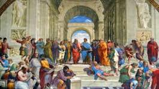

Overview: The early modern era revitalized art, science, and exploration across Europe and beyond.
Focus: The Renaissance celebrated humanism and innovation, from perspective in painting to advances in astronomy.
The Renaissance sparked new ideas in art, science, and literature. Innovations like the printing press made knowledge more accessible. This period encouraged exploration and the questioning of traditional beliefs.
